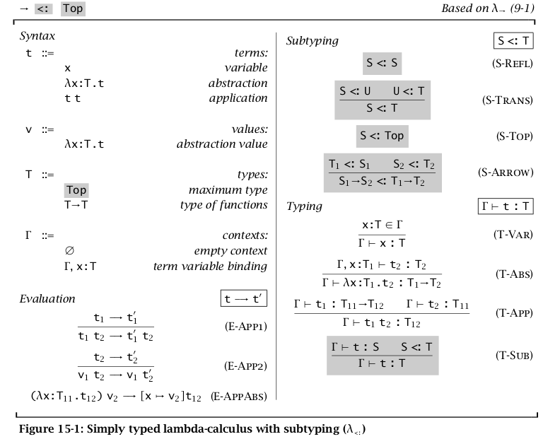
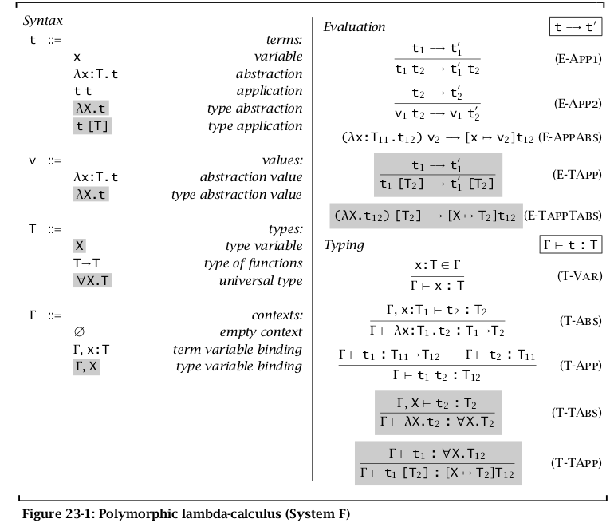

Type System
Table of Contents
Concepts
- type: type is a name for a collection of values(actually it also defines a collection of operations on these values). In general, if two things below to two different types, they can't be the same.
- type system: A type system is a set of types and the rules that gave their use in programs.
- normal form: A term is in normal form if no evaluation rule applies to it. Every value is in normal form.but not every term in normal form is a value.
- closed term: A term without free variables is said to be closed.
- diverges: if evalv(M) does not exist, we say that M diverges.
- stuck: A closed term is stuck if it is in normal form but not a value.
- redex: reducible expression. One can think redex as the subexpression reduced by evaluation relation.
- context: The text surrounding a redex is its context.
- strict: The arguments of a function are always evaluated whether they are used by the body of the function. The call by value strategy is strict.
- non-strict(aka lazy): Evaluate only the arguments which are actually used.The Call By Name and Call By Need strategy is non-strict.
- typeable(aka well-typed): A term
tis well-typed if there is some T such thatt:T. - safety(aka soundness): well-typed terms doesn't ``go wrong''.
- untyped language: if a language only consists of an expression gammar and a reduction relation, it is a untyped language.
- transparent type: aka concrete type.
- Opaque type: aka abstract type.
Safety = Progress + Preservation
- Progress: A well-typed term is not stuck (either it is a value or it can take a step according to the evaluation rules).
- Preservation: If a well-typed term takes a step of evaluation, then the resulting term is also well typed.
Simple Typed Lambda Calculus
Function type
The type of a function should describe the type of the argument and the type of the function body.
\begin{eqnarray*} \frac{\Gamma , x:T_1 \vdash t:T_2}{\Gamma \vdash \lambda x . t :T_1 \rightarrow T_2} \end{eqnarray*}One can think → as a type constructor which consumes two types and produces a function type.
terms
tdefine the terms(expressions) of the STLCvdefine the set of value(only contains function)Tdefine the set of type(only contains function type)- \(\Gamma\) is the type context, also known as type environment.
- \(\vdash\) is a relation which maps a type environment and a term to a type.
evaluation relation
type relations
Type extensions
STLC实际上限制了 lambda calculus 的表达能力,比如说在 STLC中不能定义递归函数,
不能编码 pair等等,但是为了给该语言添加这种表现力,我们可以直接向语言中添加一
些基本构造,比如为了定义递归函数,我们可以直接添加一个 fix 函数.为了编码
pair 我们可以直接将 mkpiar,fst,snd作为扩展添加进语言中.
base type
int, char, etc
Unit
Unit type is another base type. statements or expressions which are used to perform side affect return Unit type. One can think Unit type means no type.
\begin{eqnarray*} & \Gamma \vdash unit:Unit & \\ & t_1;t_2 \overset{def}{=} (\lambda x:Unit. t_2)\ t_1 & \qquad where \ x \notin \mathcal{FV}(t_2) \end{eqnarray*}pairs T1 × T2
One can think pair as a special case of tuple which only has two elements. The type rule of pair is as follows:
\begin{eqnarray*} t ::= &... &\textrm{terms}\\ & \{t, t\} &\textrm{pair}\\ & t.1 &\textrm{first projection}\\ & t.2 &\textrm{second projection}\\ v ::= &... &\textrm{values}\\ &\{v, v\} &\textrm{pair value}\\ T ::= &... &\textrm{types}\\ & T_1 \times T_2 &\textrm{pair type} \end{eqnarray*}evaluation rules:
\begin{eqnarray*} & \{v_1, v_2\}.1 \rightarrow v_1 \\ & \{v_1, v_2\}.2 \rightarrow v_2 \\ & \frac{t \rightarrow t'}{t.1 \rightarrow t'.1} \\ & \frac{t \rightarrow t'}{t.2 \rightarrow t'.2} \\ & \frac{t_1 \rightarrow t_1'} {\{t_1, t_2\} \rightarrow \{t_1', t_2\}} \\ & \frac{t_2 \rightarrow t_2'} {\{v_1, t_2\} \rightarrow \{v_1, t_2'\}} \end{eqnarray*}type rules
\begin{eqnarray*} & \frac{\Gamma \vdash t_1:T_1 \qquad \Gamma \vdash t_2:T_2}{\Gamma \vdash \{t_1,t_2\}: T_1 \times T_2} &\textrm{(T-PAIR)}\\ & \frac{\Gamma \vdash t:T_1 \times T_2}{\Gamma \vdash t.1 : T_1} &\textrm{(T-PROJ1)}\\ & \frac{\Gamma \vdash t:T_1 \times T_2}{\Gamma \vdash t.2 : T_2} &\textrm{(T-PROJ2)} \end{eqnarray*}tuples {T1 T2 …}
t1:T1, t2:T2, t3:T3 ==> (t1 t2 t3 ….) : T1 * T2 * T3 * …
The type of aa tuple can also write as: {T1 T2 T3 …}
type rules:
\begin{eqnarray*} & \frac{for \ each i \quad \Gamma \vdash t_i:T_i}{\Gamma \vdash \{{t_i}^{i\in 1..n}\}:\{{T_i}^{i \in 1..n}\}} &\textrm{(T-TUPLE)}\\ & \frac{\Gamma \vdash t:\{{T_i}^{i \in 1..n}\}}{\Gamma \vdash t.j:T_j} &\textrm{(T-PROJ)} \end{eqnarray*}records {li = Ti …}
like the ``struct'' statement in C. every field has a name. while tuple uses the index to fetch the field, record uses the name to fetch the field
{cost=30.27,partno=5524} : {cost=Float, partno=Int}
terms,values,types:
\begin{eqnarray*} t ::= & ... &\textrm{terms} \\ & \{l_i={t_i}^{i \in 1..n} \} &\textrm{record} \\ & t.l &\textrm{projection} \\ v ::= & ... &\textrm{values} \\ & \{l_i={v_i}^{i \in 1..n} \} &\textrm{record value} \\ T ::= & ... &\textrm{types} \\ & \{l_i={T_i}^{i \in 1..n} \} &\textrm{record type} \\ \end{eqnarray*}evaluation rules
\begin{eqnarray*} & \frac{t_j \rightarrow t_j'}{\{ {l_i=v_i}^{i \in 1..j-1}, l_j=t_j, {l_k=t_k}^{k \in j+1..n}\} \rightarrow} \\ & \{ {l_i=v_i}^{i \in 1..j-1}, l_j=t_j', {l_k=t_k}^{k \in j+1..n}\} \\ & \frac{t \rightarrow t'}{t.l_i \rightarrow t'.l_i} \\ & \{ {l_i=v_i}^{i \in 1..n}\}.l_i \rightarrow v_i \end{eqnarray*}type rules:
\begin{eqnarray*} & \frac{for \ each \ \Gamma \vdash t_i:T_i}{\Gamma \vdash \{ {l_i=t_i}^{i \in 1..n}\}:\{ {l_i=T_i}^{i \in 1..n}\}} \\ & \frac{\Gamma \vdash t:\{ {l_i=T_i}^{i \in 1..n}\}}{\Gamma \vdash t.l_i : T_i} \\ \end{eqnarray*}sums T1 + T2
sums is a special case of variants which has only two variants.
T1 + T2
type rules:
\begin{eqnarray*} & \frac{\Gamma \vdash t:T_1}{\Gamma \vdash inl \ t:T_1 + T_2} \\ & \frac{\Gamma \vdash t:T_2}{\Gamma \vdash inr \ t:T_1 + T_2} \\ & \frac{\Gamma \vdash t:T_1 + T_2 \quad \Gamma, x_1:T_1 \vdash t_1:T \quad \Gamma, x_2:T_2 \vdash t_2:T} {\Gamma \vdash case\ t\ of\ x_1 \Rightarrow t_1 | inr\ x_2 \Rightarrow t_2 :T} \end{eqnarray*}variants <li:Ti …>
This data type has serveral variants. every variant is tagged with a label. through these tags, we can use a case expression to deconstruct the data type. this data type is also called disjoint Unions(not Union, Union represents the untagged variant, like the ``union'' statement in C).
for example, the lambda expression type has three variants: identifier, function expression and application expression, each also is a type. so you can think the lambda expression type is the disjoint Unions of the three types.because all the elements in this three types are also in lambda expression type.
type rules:
\begin{eqnarray*} \frac{\Gamma \vdash t_j:T_j}{\Gamma \vdash \langle l_j=t_j\rangle \ as \ \langle l_i:{T_i}^{i \in 1..n} \rangle : \langle l_i:{T_i}^{i \in 1..n} \rangle} &\textrm{(T-VARIANT)}\\ \Gamma \vdash t_0: \langle l_i:{T_i}^{i \in 1..n} \rangle \\ \frac{for \ each \ i \quad \Gamma,x_i:T_i \vdash t_i:T} {\Gamma \vdash case \ t_0 \ of \ \langle l_i=x_i \rangle \Rightarrow {t_i}^{i \in 1..n} :T} &\textrm{(T-CASE)} \end{eqnarray*}recursive function
add fix to the language.
Lists (List T)
e1:T, e2:T, e3:T … ==> (e1 e2 e3 …) : List T
Reference
- μ: the state of the store. One can think μ as a map from location to expressed value
- Σ: store typing. One can think Σ as a map from location to type. the reason why we need Σ is that without the help of Σ,everytime we need the type of a location, we must calculate the type of the content pointed by this location.
type rules
Subtype
if S is the Subtype of T, any term of type S can safely be used in a context where a term of type T is expected.
S <: T means S is the subtype of T, One can think S is a subset of T.
function
The subtype rule of function type is as follows:
\begin{eqnarray*} \frac{T_1 <: S_1 \qquad S_2 <: T_2}{S_1 \rightarrow S_2 <: T_1 \rightarrow T_2} \end{eqnarray*}the inverse Lemma:
\begin{eqnarray*} \frac{S_1 \rightarrow S_2 <: T_1 \rightarrow T_2}{T_1 <: S_1 \qquad S_2 <: T_2} \end{eqnarray*}record
variant
reference
since reference can be used for reading and writing, so S1 and T1 should be equivalent in substype relation.
The Top and Bottom types
- Top is the super type of all the types
- Bot is a subtype of every type
STLC

OOP
In a OOP language, t1 is subtype of t2 if:
- t1 and t2 are all classes and t1 is subclass of t2
- t1 is a class and t2 is an interface, and t1 or one of its superclasses implements t2.
Polymorphism
concepts
- Polymorphism: in function programming language, Polymorphism usually denotes Parameter Polymorphism, however in Object-oriented programming language, it usually denotes the subtype Polymorphism and the term generics(泛型) is used to denote parameter polymorphism.
Parameter Polymorphism
这种多态一般意味着: 函数不需要知道参数的具体类型, 比如说haskell 中的一个计 算list长度的函数length,length的类型很显然是 \([\alpha] \rightarrow int\) (\([\alpha]\) 可以看作是 \((\forall \alpha )[\alpha]\) 的简写), length并不需要 知道参数到底是[int],[char]或者[float], length对于这些类型都是同一种操作方式
就像使用 λ 来提供抽象,使得我们可以定义函数,而这个函数可以对不同的 value作出反应, 对type我们也可以采用类似的方法.用Λ 来提供抽象使得一个 definition可以对多个type作出反应,以swap函数为例,它会交换一个pair中first与 second位置的元素, swap的定义如下:
\begin{eqnarray*} swap = \Lambda \alpha . \Lambda \beta . \lambda p : (\alpha \times \beta) . \langle snd \ p , fst \ p \rangle \end{eqnarray*}该函数的type如下:
\begin{eqnarray*} \vdash swap : (\forall \alpha . (\forall \beta . ((\alpha \times \beta) \rightarrow (\beta \times \alpha)))) \end{eqnarray*}如果要交换的pair的type是 \(bool \times int\), 那么就可以将这两个type应用到 swap上,也就是 \(swap[bool][int]\) 这样就可以得到类型正确的swap函数了.
在比如说 identity 函数
\begin{eqnarray*} id = \Lambda \alpha . \lambda x: \alpha . x \end{eqnarray*}identity函数的类型就是
\begin{eqnarray*} \vdash id : (\forall \alpha. (\alpha \rightarrow \alpha)) \end{eqnarray*}前面说过,STLC实际上限制了 untyped lambda calculus的表达能力, STLC不能编码 pair,list,不能定义递归函数等等,当我们引入了 Λ 抽象后, 这些问题就都解 决了. 比如编码list:
system F

ad-hoc polymorphism
Overload
这种多态对不同的类型有不同的操作方式,比如haskell的 + 操作,该操作可以应用
于int, float等等, 但是对于每一种类型它都有一套特有的操作方式,也就是需要重载.
subtype Polymorphism
Mostly used in Object-oriented language.
Recursive Type
An Example(number list)
An number list is either
- null or
- (cons n l) where n is a number and l is a list of number.
what is the type of the number list? The \(List_{num}\) must obey the following equation:
\begin{eqnarray*} List_{num} = (bool + (num \times List_{num})) \end{eqnarray*}but like the recusive function, you can't reference the type itself when you define it. so you can't use \(List_{num}\) on the right side of the equation. but we can use the same skill like we define the recusive function: we can define tfix(the type fix combinator), so the \(List_{num}\) can define like this:
\begin{eqnarray*} List_{num} \dot{=}_{} tfix(\forall \alpha .(bool + (num \times \alpha))) \end{eqnarray*}
by convention a tfix an its following ∀ are collapsed together to a
single μ, μ is a explicit recursive operator for types. one can
think μ is like letrec.
a type constructed by μ is a recursive type.
fix combinator
fold and unfold
In many language, there is no explicit fold and unfold keyword. instead
each use of a constructor to create a value implies a fold, and each use
of a constructor in a pattern match implies unfold. The type rules for
fold and unfold is as follows:
Type Inference
Unification Algorithm
unification consumes a set of constraints and either:
- identifies inconsistencies amongst the constraints or
- generate a substitution that represent the solution of the constraints.
The algorithm is as follows(Assume the constraint has the form: X=Y):
- Push all the constraints to a stack and generate an empty substitution.
- If X and Y are identical identifiers, do nothing.
- If X is an identifier, replace all occurrences of X by Y both on the stack and in the substitution, and add X → Y to the substitution.
- If Y is an identifier, replace all occurrences of Y by X both on the stack and in the substitution, and add Y → X to the substitution.
- If X is of the form C(X1 , . . . , Xn ) for some constructor C,4 and Y is of the form C(Y1 , . . . ,Yn ) (i.e., it has the same constructor), then push Xi = Yi for all 1 ≤ i ≤ n onto the stack.
- Otherwise, X and Y do not unify. Report an error.
实际中在实现一个类型推导的过程是这样的:
- 先将 substitution 应用到 X 与 Y, 也就是替换 X 与 Y 中已在 substitution 中绑定的 type variable.
- 如果 X 与 Y 相等,那么什么也不做
- 如果 X 是标识符,那么先检查 Y 中是否包含 X, 如果包含那么就是一个错误,因为 一个像这样的方程是无解的: \(X = X \rightarrow int\),如果不包含,那么将 substitution 中每一个方程的右边部分中出现的 X 用 Y替换掉, 然后把 X=Y 添 加进 substitution中
- 如果 Y是标识符,同第三条,只是方向相反.
- 如果 X 与 Y都是复合类型, 比如说函数类型, record 类型等等, 那么先拆解